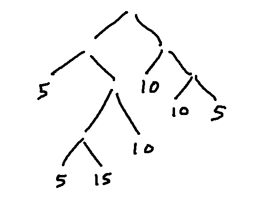
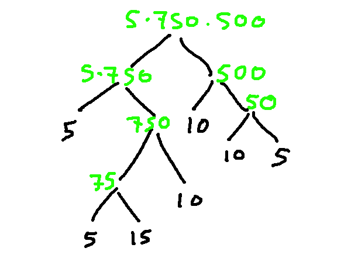
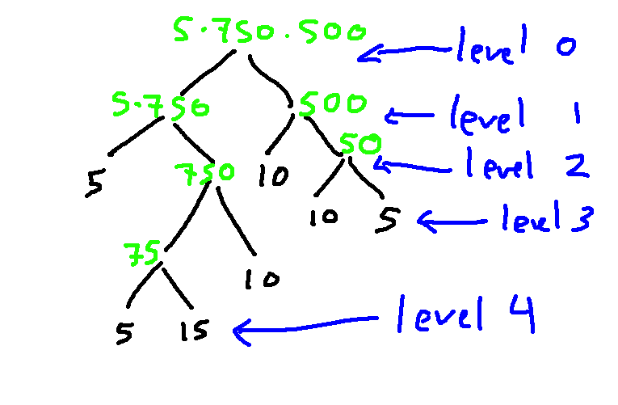
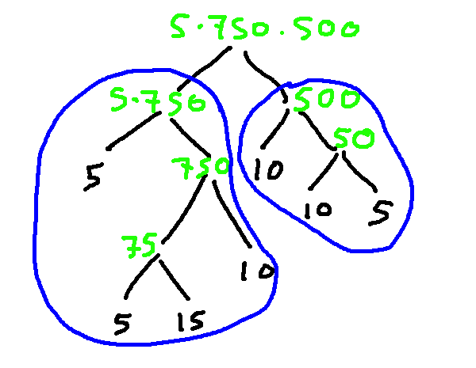
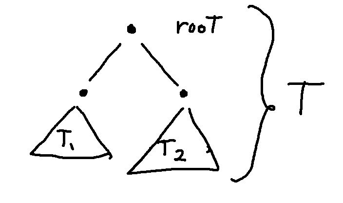
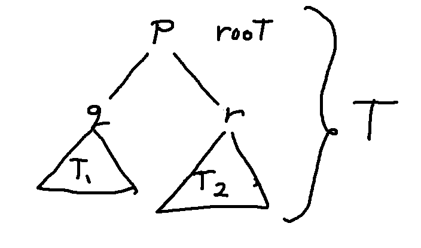

Now, let's see how induction proofs work on trees. Here's the definition for a simple (but slightly silly) type of tree, called a llama tree.
A llama tree is a full binary tree with natural number labels on nodes, such that
- a leaf node has label 5, 10, or 15
- an interior node has label xy, where x and y are the labels of its children.
Remember some bits of terminology:
So the nodes in a llama tree have either 0 or 2 children.
Here's a partly-built llama tree with values on the leaves. Notice that the tree isn't at all symmetric and many of the branches don't go down to the bottom level. We have a free choice of whether each node should have children and what label to put on each leaf.

The labels on the interior nodes are constrained by the definition of a llama tree. So we can figure out all of their labels based on the leaf labels.

Levels in a tree start with 0 at the root. The height of a tree is the level of the leaves, or (said another way) the number of edges between the root and the lowest leaf. That's 4 in this case.

Here's a claim about llama trees:
Claim: the root node of a llama tree has a label divisible by 5
This is true because it's true at the leaves and because the local constraint in the llama tree definition (a parent's label is the product of its children's labels) causes this property to propagate upwards.
To prove this claim using induction, we first need to identify our induction variable. For complex objects like trees, the induction variable measures the size of the object. For trees, I usually use the height. The number of nodes also works.
So our proof would start out like this:
Proof: by induction on h, which is the height of the llama tree.
The base case needs to cover the shortest trees of this type. The shortest possible llama tree has just a single node and therefore has height 0. Notice that we need to describe all trees of this height and explain why the claim is true for all of them.
Proof: by induction on h, which is the height of the llama tree.Base case: at h=0, the llama tree has only a single node. By the definition of a llama tree, this node has label 5, 10, or 15. All of these are divisible by 5. So our claim holds at h=0.
The inductive hypothesis is made just as for a numerical induction. That is, we copy the claim and assert that it works from the first base case up through a bound k-1.
Inductive hypothesis: the root node of a llama tree has a label divisible by 5, for trees of height h=0,...,k-1.
The rest of our inductive step needs to show that the claim works for a tree of height k. We typically start by introducing our tree:
Inductive hypothesis: the root node of a llama tree has a label divisible by 5, for trees of height h=0,...,k-1.Rest of inductive step: Suppose that T is a llama tree of height k.
.....
So the root of T is is divisible by 5.
The first thing we do in an inductive step is to divide the large object (our tree T) into smaller objects of the same type (a llama tree). We do this by dividing the tree at the root. Here's what this looks like for our example llama tree:

Here's a general schematic:

Dividing at the root ensures that we have a simple situation to analyze, in which both subtrees (\(T_1\) and \(T_2\)) are llama trees. This is frequently not the case if you improvise other ways to divide up T. So do not try removing a leaf, or the bottom level of the tree, or the like.
Notice also that (\(T_1\) and \(T_2\)) are shorter than T. They don't have to have the same height, so one of them might be shorter than height k-1. But their heights are both \(\le k-1\). So the inductive hypothesis applies to both of them.
Since we need to talk about the labels in nodes, let's set up variables for the labels in the root node and its children.

To write out the proof, we're going to describe the key features from this diagram, for the reader. It's often helpful to include the actual diagram as well, though that's not always convenient when typing online. Also notice that the definition of a llama tree tells us how p, q, and r are related to one another.
Inductive hypothesis: the root node of a llama tree has a label divisible by 5, for trees of height h=0,...,k-1.Rest of inductive step: Suppose that T is a llama tree of height k.
We can divide T into its root and two subtrees (\(T_1\) and \(T_2\)). Suppose that the label on the root is p and the labels on the roots of (\(T_1\) and \(T_2\)) are q and r. By the definition of a llama tree, p = rq.
.....
So the root of T is is divisible by 5.
Now, we need to apply our inductive hypothesis to both subtrees.
Inductive hypothesis: the root node of a llama tree has a label divisible by 5, for trees of height h=0,...,k-1.Rest of inductive step: Suppose that T is a llama tree of height k.
We can divide T into its root and two subtrees (\(T_1\) and \(T_2\)). Suppose that the label on the root is p and the labels on the roots of (\(T_1\) and \(T_2\)) are q and r. By the definition of a llama tree, p = qr.
By the inductive hypothesis, q and r are divisible by 5.
.....
So the root of T is is divisible by 5.
In this case, there's almost nothing left to finish the proof.
Inductive hypothesis: the root node of a llama tree has a label divisible by 5, for trees of height h=0,...,k-1.Rest of inductive step: Suppose that T is a llama tree of height k.
We can divide T into its root and two subtrees (\(T_1\) and \(T_2\)). Suppose that the label on the root is p and the labels on the roots of (\(T_1\) and \(T_2\)) are q and r. By the definition of a llama tree, p = qr.
By the inductive hypothesis, q and r are divisible by 5. Since p=qr, this means that p is also divisible by 5.
So the root of T is is divisible by 5, which is what we needed to show.